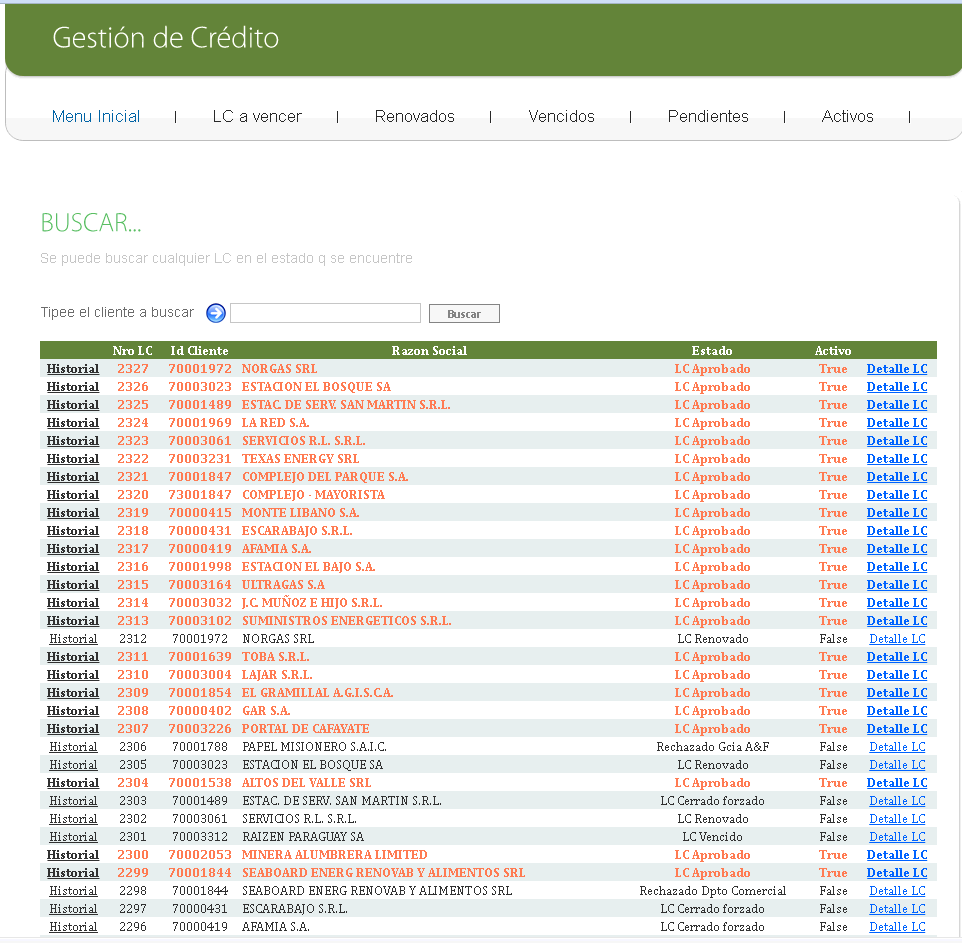
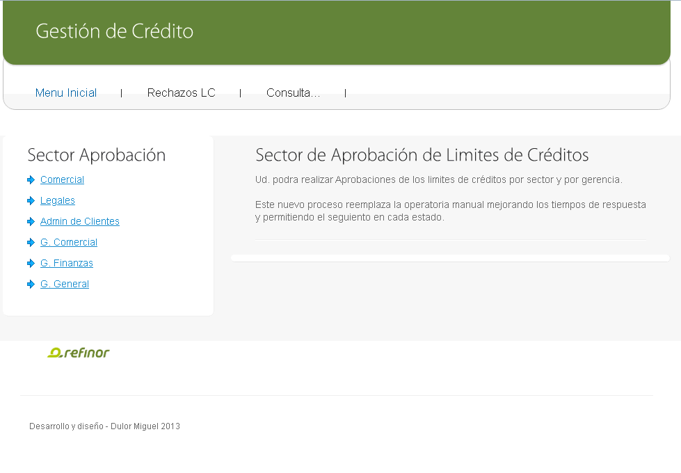
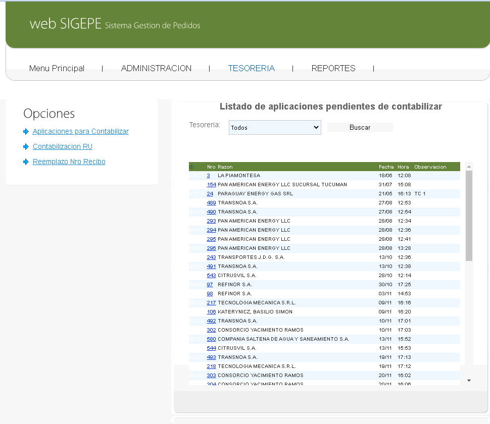

1. Web Clientes: Nuevo Pedido
Esta pantalla permite a los clientes cargar de forma autónoma sus solicitudes de combustibles. Aquí pueden especificar todos los detalles necesarios para un nuevo pedido.
- Datos del Cliente: Información básica del cliente.
- Planta de Despacho: Selección de la planta desde donde se realizará el envío.
- Fecha de Entrega: Fecha deseada para la recepción del pedido.
- Condición de Venta (CIF/FOT): Permite al cliente elegir si el transporte es provisto por la refinería (CIF) o si el cliente envía su propio camión (FOT).
- Carga de Productos: Selección de los tipos y cantidades de combustibles.
2. Web Clientes: Listado de Pedidos
Los clientes pueden visualizar el historial y el estado actual de todos sus pedidos. Esta vista ofrece una trazabilidad completa y la posibilidad de gestionar sus solicitudes.
- Filtro por Fechas: Búsqueda de pedidos dentro de un rango de fechas.
- Información Detallada: Muestra fecha de pedido, fecha de entrega, hora de ingreso a planta, estado (Autorizado, Pendiente, etc.), tipo (CIF/FOT), número de pedido y valor aproximado.
- Acciones: Opciones para 'Ver', 'Editar' o 'Cancelar' pedidos, según su estado.
3. Web Clientes: Detalle de Pedido
Acceso a la información pormenorizada de un pedido específico, incluyendo los datos de carga y el estado actual del proceso.
- Datos de Carga: Información sobre el chofer, camión, productos, cantidades, importe y cuenta contable.
- Estado del Proceso: Indicadores visuales del progreso del pedido (Proceso Iniciado, Autorizado).
4. Menú Portal: Portal EIWA
La puerta de entrada a todos los módulos del sistema, ofreciendo un acceso centralizado y organizado a las diferentes aplicaciones.
- Módulos Integrados: Acceso directo a SIGEPE (Gestión de Pedidos), Límite de Crédito (LC), APYCO Web (Aplicaciones y Contabilizaciones), entre otros.
- Navegación Intuitiva: Diseño claro para una fácil selección de la aplicación deseada.
5. Menú SIGEPE: Gestión de Pedidos
El menú principal del sistema de gestión de pedidos, donde se inician y supervisan las operaciones relacionadas con los combustibles.
- Pedidos: Opción para iniciar la carga de un nuevo pedido de combustible.
- Sectores: Autorización y seguimiento por los distintos sectores (Administración, Comercial, Logística, Facturación).
- Portería: Gestión de ingresos y egresos de camiones en planta.
6. SIGEPE: Listado de Pedidos por Sector
Vista detallada de los pedidos que permite a los diferentes sectores involucrados en el proceso de SIGEPE, gestionar y supervisar las solicitudes según su rol.
- Opciones de Búsqueda: Filtros por fecha y cliente para una gestión eficiente.
- Información del Pedido: Muestra ID, chofer, cliente, planta, tipo (CIF/FOT) y estado del pedido.
- Acciones Específicas: Enlaces para 'Ver', 'Generar Orden de Carga', 'Solicitar Facturación', etc., según el estado y tipo de pedido.
7. SIGEPE: Trazabilidad del Pedido
Esta pantalla ofrece una visión completa del historial de un pedido, mostrando cada etapa por la que ha pasado, desde su inicio hasta su finalización.
- Historial de Estados: Detalle cronológico de cada cambio de estado (Proceso Iniciado, Autorizado Comercial, Pedido OK Saldo, Orden Generada, Autorizado Ingreso a Isla de Carga, Pedido Facturado, Pedido Enviado).
- Información de Registro: Usuario, fecha y hora de cada transición de estado.
8. Gestión LC: Menú Principal
El punto de partida para la administración de límites de crédito, garantías y contratos de los clientes.
- Alta LC: Para gestionar nuevas solicitudes de límites de crédito.
- Renovar: Proceso para la renovación de límites existentes.
- Aprobar LC: Panel para la aprobación de límites de crédito.
- Contratos y Garantías: Gestión de la documentación legal asociada.
- Consultas y Reportes: Para el seguimiento y análisis de la gestión de crédito.
9. Gestión LC: Consultas de Límites de Crédito
Permite buscar y visualizar el estado de los límites de crédito de los clientes, proporcionando una visión clara de su situación crediticia.
- Búsqueda por Cliente: Facilita la localización de un límite de crédito específico.
- Listado Detallado: Muestra ID, Razón Social, Estado (LC Aprobado, LC Renovado, LC Vencido, LC Cerrado, Rechazado) y si está activo.
10. Gestión LC: Panel de Aprobación
Este panel centraliza el proceso de aprobación de límites de crédito, mostrando los sectores involucrados y agilizando las decisiones.
- Sectores de Aprobación: Lista de los departamentos que intervienen en el flujo de aprobación (Comercial, Legales, Administración de Clientes, Gerencias).
- Descripción del Proceso: Información sobre cómo el nuevo proceso reemplaza la operatoria manual, mejorando tiempos de respuesta y seguimiento.
11. Gestión LC: Contratos y Garantías
Módulo dedicado a la gestión y búsqueda de garantías asociadas a los límites de crédito de los clientes, asegurando la correcta administración de la documentación legal.
- Búsqueda de Garantías: Campo para buscar garantías por cliente.
- Gestión Centralizada: Facilita la administración de la documentación legal, reemplazando procesos manuales.
12. Gestión APYCO: Menú Principal
El punto de acceso al sistema de Aplicación y Contabilización (APYCO Web), diseñado para optimizar la gestión de cuentas corrientes.
- Consultas: Para verificar saldos y extractos de los clientes.
- Aplicación: Para la aplicación de depósitos y facturas.
- Contabilización: Para la contabilización de depósitos varios.
13. Gestión APYCO: Consulta de Cuenta (Saldo al día)
Ofrece una visión completa y actualizada del saldo de la cuenta de un cliente, integrando facturas, depósitos y pedidos para una conciliación precisa.
- Detalle de Facturas y Depósitos: Listados claros de transacciones.
- Pedidos Pendientes: Visibilidad de los pedidos que afectan el saldo.
- Resumen de Saldo: Cálculo automático del saldo actual y el límite de crédito disponible.
14. APYCO: Nueva Aplicación
Pantalla para iniciar el proceso de aplicación de depósitos contra facturas, optimizando la conciliación de cuentas corrientes.
- Búsqueda de Cliente: Permite seleccionar el cliente para el cual se realizará la aplicación.
- Automatización: Facilita la asociación de depósitos con las facturas correspondientes.
15. Gestión APYCO: Tesorería - Aplicaciones Pendientes de Contabilizar
Listado de las aplicaciones que aún no han sido contabilizadas, crucial para el seguimiento financiero y la gestión de la tesorería.
- Filtro por Tesorería: Permite organizar y buscar aplicaciones pendientes.
- Detalle de Aplicaciones: Muestra número, razón social, fecha, hora y observaciones de cada aplicación.
16. Gestión APYCO: Tesorería - Contabilización
Pantalla final para la contabilización de depósitos y facturas aplicadas, mostrando el resumen de la operación y el saldo resultante.
- Depósitos y Facturas Aplicadas: Resumen de los montos y detalles de las transacciones.
- Saldo Final: Cálculo automático del saldo después de la contabilización.
- Confirmación: Opción para confirmar la operación.